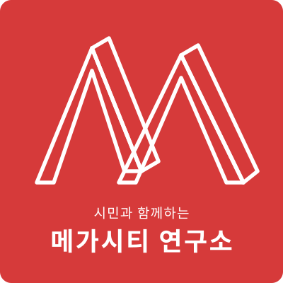

CITIZENS · COMMUNITY · RESEARCH
급격한 인구 변화와 수도권 집중 속에서 국가균형발전의 해법을 찾고, 시민의 참여로 광역도시권의 내일을 설계합니다.

설립 취지, 조직 구성, 법인 정보를 확인합니다.
메가시티의 정의, 한국형 메가시티, 해외 사례를 소개합니다.
정책 연구, 시민 광장, 강좌, 월례 세미나 활동입니다.
기부금 모금·활용실적, 결산 자료를 공개합니다.
문의, 협력 제안, 후원 안내를 확인합니다.
사단법인시민과함께하는메가시티연구소는 「법인세법 시행령」 제39조 제1항에 의거하여 공익위반사항 관리·감독기관이 개설한 인터넷 홈페이지를 다음과 같이 게시합니다.